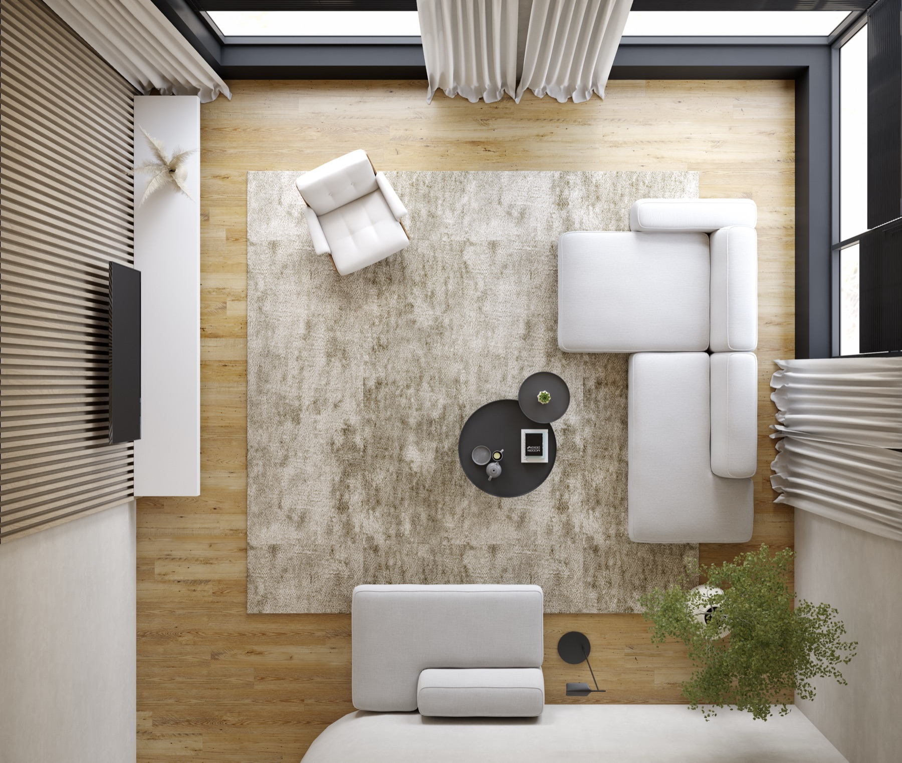

§ 01 of 04
01
Design.
Drawings first, in that room.
Before anything is specified, we sit with the architect's plans, the interior designer's palette, and you. The outcome of this phase is a set of drawings the house will be built against, not retrofitted to.

What happens
A walk-through of the site if it exists, or a conversation over the architect's set if it doesn't. We ask how the house is used, where the art is going, where the kids sleep, how you take your morning. Then we draw.
Lighting layers, shade pockets, speaker placements, display locations, media closets, and cable paths are drawn to scale and shared back for review. Two rounds is typical.
What you receive
- Lighting plan, to scale
- Shade schedule by window
- Speaker and display layout
- Cable pathway drawings
- Media closet elevation
- Keypad placement plan
- Signed cover sheet